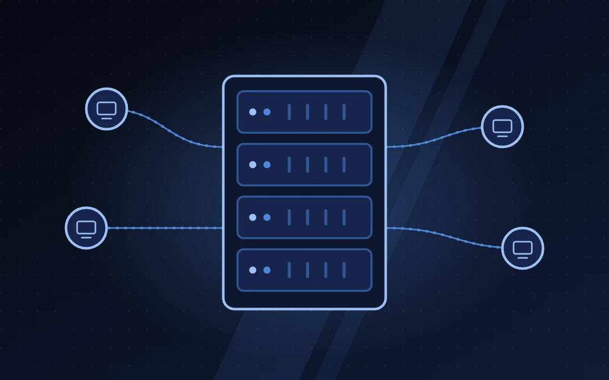
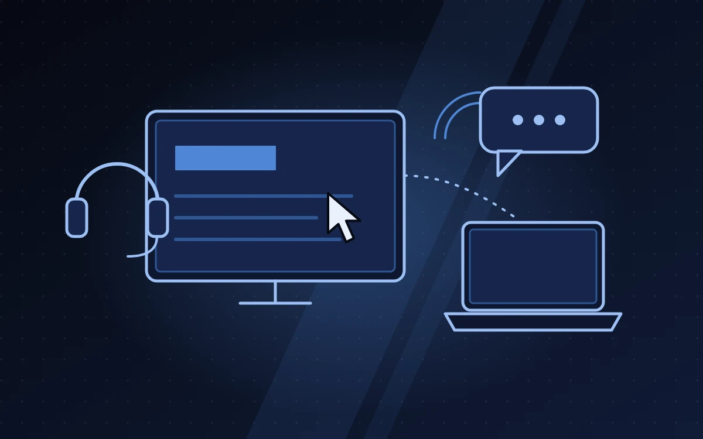
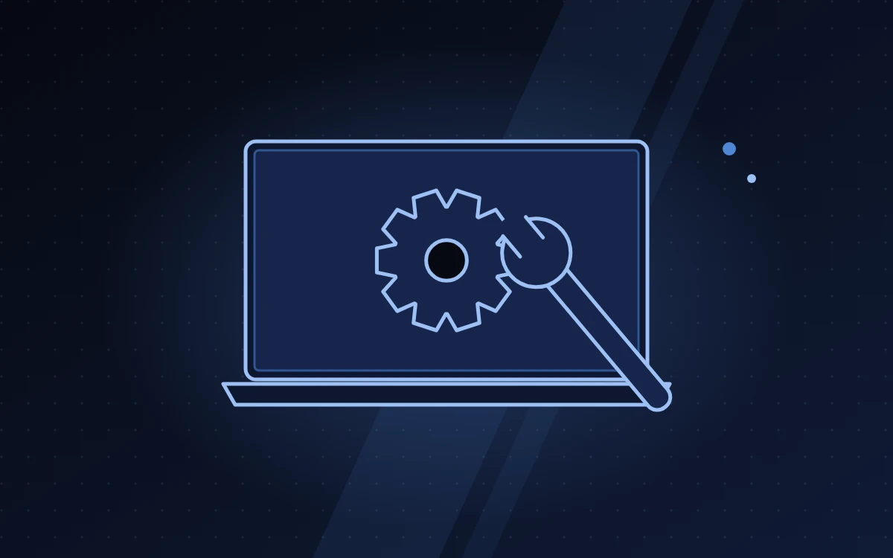
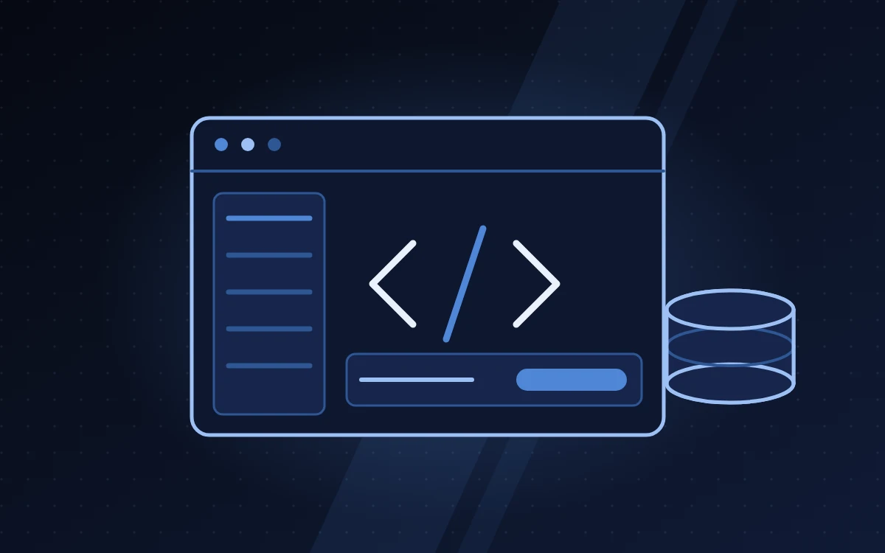
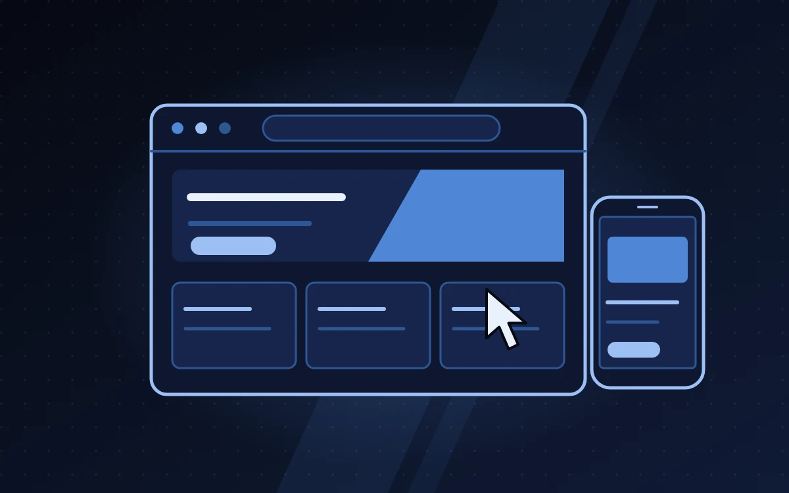

Assistência completa a toda a procura de TI, dos servidores ao cabeamento estruturado.

Ligações estáveis e seguras para a sua empresa funcionar sem falhas.

Resolvemos à distância, sem que tenha de parar o trabalho.

Manutenção preventiva e correctiva de computadores, telemóveis e tablets.

Software para gerir documentos, processos, utilizadores e pedidos.

Do site institucional ao sistema de gestão, rápidos e seguros.